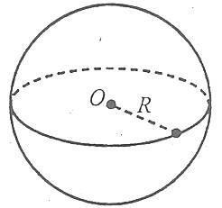
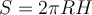
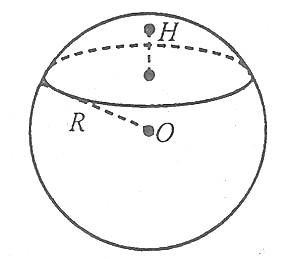
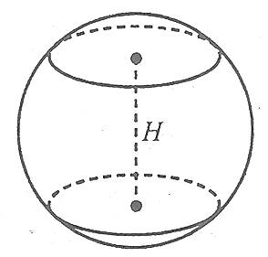
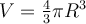
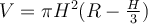
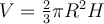
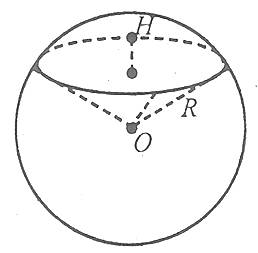

Площі поверхонь та об'єми тіл обертання
Площі поверхонь та об'єми тіл обертання


3) Формули площі поверхні сфери, об’єму кулі
Площа поверхні сферизнаходиться за формулою
де R – радіус сфери.

Площа сферичного сегмента обчислюється за формулою
,
де R – радіус сфери, а Н – висота сегмента.

Площа сферичного поясу (кільця) знаходиться за формулою
,
де R – радіус сфери, а Н – висота поясу (кільця).

Об’єм кулі обчислюється за формулою
,
де R – радіус кулі.
Об’єм кульового сегмента обчислюється за формулою
,
де R – радіус кулі, Н – висота кульового сегмента.
Об’єм кульового сектора обчислюється за формулою
,
де R – радіус кулі, Н – висота відповідного кульового сегмента.
